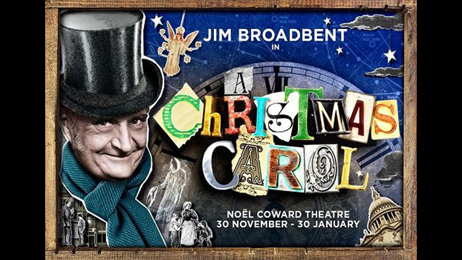

| Character | Actor |
|---|---|
| Ebenezer Scrooge | Jim Broadbent |
| Bob Cratchit | Adeel Akhtar |
| Spirit of Christmas Present | Samantha Spiro |
| Fezziwig | Keir Charles |
| Other roles played by | Amelia Bullmore |
| Puppeteer | Jack Parker |
| Puppeteer | Kim Scopes |
| Role | Person |
|---|---|
| Written By | Patrick Barlow |
| Director | Phelim McDermott |
| Sets and Costumes | Tom Pye |
This adaptation uses only five actors to bring some of Dickens' most beloved characters to life. From Scrooge and Tiny Tim to Bob Cratchit and Mrs. Fezziwig, Barlow's A Christmas Carol uses nothing more than some simple props, fresh physicality, and the power of imagination to convey this timeless story of redemption.